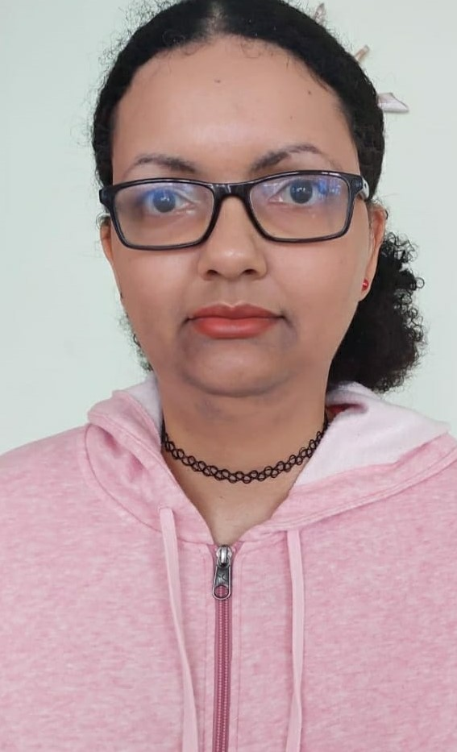

<!DOCTYPE html>
<html lang="pt-br">
<head>
    <meta charset="UTF-8">
    <meta name="viewport" content="width=device-width, initial-scale=1.0">
    <title>Curriculo</title>
<style>
    body{
        font-family: Arial, Helvetica, sans-serif;
    }
    a {
        color:rgb(4, 150, 2);
        text-decoration: none;
        font-weight: bold;
    }
    a:visited{
        color:rgb(1, 92, 19);
    }
    #aula:visited{ 
        color:green;
    }
    a:hover{ 
        color:rgb(16, 116, 1);
        text-decoration: underline;
    }
    a:active{ 
        color:rgb(69, 123, 70); 
    }
</style>
</head>
<body style="background-color:#13B028;font-family: Arial, Helvetica, sans-serif; font-size:16px;">
</html>  
    
    <h1 style="background-color:#0C701A;color:#18D631;text-shadow: 2px 2px 0px rgba(0, 0, 0, 0.686);">Minha Apresentação</h1>

    <p style="color:rgb(2, 98, 21);font-size:1.2em;">Meu nome é Raissa Fernandes Gomes Batista, tenho 35 anos, 
    sou formada em Educação Fisica Bacharelado e Licenciatura.As minhas habilidades e competências são pontualidade, 
    trabalhar em equipe,organização,pensamento crítico,curiosidade,colaboração,dedicação,empatia,
    inglês básico,espanhol básico e informatica básica. </p>

    <p style="color:rgb(2, 98, 21);font-size:1.2em;">Minhas experiências profissionais foram na academia Fitness Center do colégio Antônio Peixoto,
    como estagiária de musculação em outubro de 2009, trabelhei como professora na Educação Infantil na creche Paulo Michels de fevereiro de 2019 a maio de 2019,
    no Ensino Fundamental nas escolas Nossa Senhora da Conceição em setembro de 2017,na escola de Educação Básica Rosa Torres de abril de 2018 a dezembro do mesmo ano 
    e na escola de Educação Básica América Dutra Machado em junho de 2019.</p>  

    <p style="color:rgb(2, 98, 21);font-size:1.2em;">Minhas hobbies são ouvir músicas todos os dias, faço meditação, tenho um site sobre produtos digitais sobre
    pilates que é um dos métodos de exercicio fisico que praticava até a pandemia,apesar dos meus conhecimentos básicos de 
    de espanhol e ingles, ainda continuo estudando para aprimorar bem os idiomas, raramente faço pinturas de quadros a mais de 20 anos, apredendo novas receitas de almoço e lanches.</p>  

    <p style="color:rgb(2, 98, 21);font-size:1.2em;">Meus trabalhos voluntários foram na prefeitura de Florianópolis ministrando ginástica e dança para idosos de 
    junho de 2018 a novembro do mesmo ano e ser catequista na Paróquia São José e Santa Rita de Cássia de março de 2018 até 2023. </p>
    
    <p style="color:rgb(2, 98, 21);font-size:1.2em;">Meus últimos cursos foram Gestão e Empregabilidade da RECODE,
    o Gestão de Finanças Pessoais da Escola Nacional de Administração Pública - Enap no Banco Central (BACEN),
    Além de Jogar, Eu faço Jogos!-CPDI de maio até outubro de 2023,A cultura Marker Na Educação Física No Processo De Aprendizagem, 
    Avaliação Física,Psicomotricidade e Obesidade nas Aulas de Educação Física em 2024.</p>  

    </p>

    <h1 style="background-color:#0C701A;color:#18D631;text-shadow: 2px 2px 0px rgba(0, 0, 0, 0.686);">Minhas Redes Sociais</h1>
    <p style="color:rgb(2, 98, 21);font-size:1.2em;">
    
    <a href="https://github.com/RaissaFernandes25/">Meu perfil no Github</a>

    <a href="https://linkedin.com/in/raissabatista/">Meu perfil no linkedin</a>

    <a href="https://facebook.com/raissabatista.56/">Meu perfil no facebook</a>
    
    <a href="https://www.instagram.com/prof.raissa25">Meu perfil no instagram</a>

    </p>
    <br>
    
    <a href="index.html">Voltar</a>

</body>
</html>